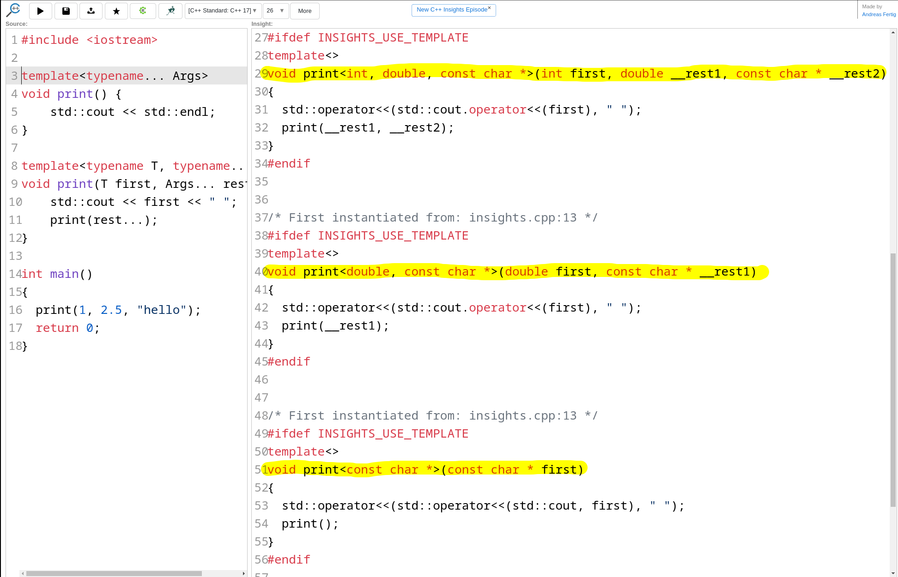

Goal of this presentation
- Template allows generic programming
- Template enables type safety
- Template is performant
- Templates are not complicated

What we will cover
- Template definition & syntax
- Function templates
- Template argument deduction
- Variadic templates
- Class templates
- Practical examples
Template definition
Definition from https://en.cppreference.com/cpp/language/templates
A template is a C++ entity that defines one of the following:
- a family of classes (class template), which may be nested classes
- a family of functions (function template), which may be member functions
- an alias to a family of types (alias template)
(since C++11) - a family of variables (variable template)
(since C++14) - a concept (constraints and concepts)
(since C++20)
Template syntax
template< [parameter-list] >
declarationparameter-list can be:
- non type template parameter e.g.
int, enum value, constexpr value - type parameter e.g.
std::string - template parameter pack using ellipsis
... - template template parameter e.g.
template<typename> class
declaration can be:
- a (class member) function
- a class/struct
- a type alias
Template syntax
typename vs class
To declare a type parameter, both spellings mean exactly the same thing.
template<typename T> void f(T); // these two declare
template<class T> void f(T); // the same function template💡 Prefer typename: the argument does not have to be a class
(int, T*, ...)
⚠️ They are not interchangeable everywhere
template<template<typename> class C> struct A; // since C++98
template<template<typename> typename C> struct B; // since C++17typename also has a second, unrelated job: naming a dependent type
template<typename T>
void g(T& c) {
typename T::iterator it = c.begin(); // 'class' ❌ does not work here
}Function template
Defines a family of functions
💡 Give good name to template parameters
template<typename Swappable>
void mySwap(Swappable& a, Swappable& b) {
Swappable tmp = std::move(a);
a = std::move(b);
b = std::move(tmp);
}⚠️ The compiler does not produce any code if the template is not instantiated
⚠️ The definition is usually visible in every translation unit that instantiates it (but doesn't have to)
Function template
Defines a family of functions
The compiler generates a function for each instantiation.
It must deduce the template parameters from the function arguments.
template<typename Swappable>
void mySwap(Swappable& a, Swappable& b) {
Swappable tmp = std::move(a);
a = std::move(b);
b = std::move(tmp);
}int a = 5, b = 10;
mySwap(a, b);
assert(a == 10 && b == 5);std::vector<int> c = {1,2}, d = {3,4};
mySwap(c, d);
assert((c == std::vector<int>{3,4} &&
d == std::vector<int>{1,2}));⚠️ Calling the function with 2 different types fails
int e = 1;
std::vector<int> f = {5,6};
mySwap(e, f); // ❌ Does not compileFunction template
Defines a family of functions
auto parameters are templates
Abbreviated function template syntax (C++20)
ℹ️ Each auto introduces a hidden template parameter
void mySwap(auto& a, auto& b) {
auto tmp = std::move(a);
a = std::move(b);
b = std::move(tmp);
}💡 In order to retrieve the type of an auto
parameter, use decltype(...)
⚠️ Type of a and b can be different
Function template
Implicit requirements
Implicit requirements are the sets of operations and properties that a type must support for the template to compile
template<typename T>
void mySwap(T& a, T& b) {
T tmp = std::move(a);
a = std::move(b);
b = std::move(tmp);
}What are the implicit requirements for the type T?
🙋♂️🙋♀️
- Must be move constructible i.e have a valid
T(T&&)constructor - Must be move assignable i.e have a valid
T& operator=(T&&)assignment operator
💡 C++ 20 formally defines the requirement via the swappable
concept.
💡 Before C++20, document the requirement explicitly using comments.
ℹ️ There are numerous possible implicit requirements
For instance:
Tmust have a public class member variableT.dataTmust have a function memberfun(int)
Template argument deduction
General
Template argument deduction is the process by which the compiler determines the template arguments
from the function arguments.
For instance
template<typename T>
T myMax(T a, T b) {
return a > b ? a : b;
}
void myFun() {
int a = 5, b = 4;
auto c = myMax(a, b);
static_assert(std::is_same_v<decltype(c), int>);
}Calling myMax(5, 4) deduces T = int
Template argument deduction
General
Another example
template<typename T>
T myMax(T a, T b) {
return a > b ? a : b;
}
void myFun() {
auto c = myMax(5.1, 5.2);
}What type is T deduced ?
🙋♂️🙋
doubleTemplate argument deduction
General
Provide the template argument explicitly to force using float
template<typename T>
T myMax(T a, T b) {
return a > b ? a : b;
}
void myFun() {
auto c = myMax<float>(5.1, 5.2);
}Template argument deduction
CV qualifier deduction
Depending on whether the parameter type is a reference or not, cv-qualifiers are deduced differently.
template<typename T>
void func(T a);
template<typename T>
void funcRefParam(T& a);
int x = 5;
const int cx = 5;
func(x); // T is int
func(cx); // T is int (cv-qualifier is dropped)
funcRefParam(x); // T is int
funcRefParam(cx); // T is const int (cv-qualifier is preserved)🔑 Rules 🔑
- If the parameter is passed by value, cv-qualifiers are dropped
- If the parameter is passed by reference, cv-qualifiers are preserved
Template argument deduction
CV qualified parameters
template<typename T>
void functConstRefParam(const T& a);int x = 5;
const int cx = 5;
functConstRefParam(x); // T is int
functConstRefParam(cx); // T is int (cv-qualifier is dropped)⚠️ a is a const reference even though T deduce without const
Template argument deduction
Arrays and pointer deduction
template<typename T>
void arrayFunc(T arg);
template<typename T>
void arrayRefFunc(T& arg);int arr[5];
arrayFunc(arr); // T == int* (array decays to pointer)
arrayRefFunc(arr); // T == int[5] (reference keeps the array type)Template argument deduction
More on reference parameters
⚠️ A reference parameter can deduce a pointer type ⚠️
template<typename T>
void increment(T& value) {
++value;
}
int retries = 0;
int* retriesPtr = &retries;
// ...
// 😱 Forgot '*' 😱.
increment(retriesPtr); // T is int* i.e. type of value is int*&
printf("%d\n", *retriesPtr); // 💥 disaster 💥Template argument deduction
Reference parameter take away
⚠️Think twice when using non-const reference parameters
💡Make use of <type_traits> e.g. std::is_pointer,
std::is_const, ... to validate the template argument type at compile time
💡From C++20, use concepts
When the deduced type surprises you
A generic myMax
template<typename T>
T myMax(T a, T b) {
return a > b ? a : b;
}myMax(5,4) returns 5 👍
When the deduced type surprises you
A generic myMax
template<typename T>
T myMax(T a, T b) {
return a > b ? a : b;
}What is the result of the following call? 🤔
myMax("hello", "world");🙋♂️🙋♀️
The deduced function is
template <>
const char* myMax(const char* a, const char* b) {
return a > b ? a : b;
}We don't know the result 🤷. Pointer comparison
When the deduced type surprises you
Fix: Use a function overload
A non-templated overload function gives a custom implementation for a specific type.
const char* myMax(const char* a, const char* b) {
return std::strcmp(a, b) > 0 ? a : b;
}Now myMax("hello", "world") returns the pointer to "world" 👍
💡 Clear benefit over a C macro 💡
Function Template Specialization
Why not an explicit specialization? 🤔
Specialization provides a custom implementation for a specific type
template<typename T>
T makeDefault() { return T{}; }
template<>
std::string makeDefault<std::string>() {
return "empty";
}Function Template Specialization
Why not an explicit specialization? 🤔
Function template cannot be partially specialized
Explicit specialization is not considered during overload resolution
template<typename T>
T myMax(T a, T b) {
return a > b ? a : b;
}
template<>
const char* myMax(const char* a, const char *b){
printf("Call specialization\n");
return std::strcmp(a, b) > 0 ? a : b;
}
const char* myMax(const char* a, const char* b) {
printf("Call overload\n");
return std::strcmp(a, b) > 0 ? a : b;
}
int main() {
myMax("a", "b");
return 0;
}Prints Call overload
Why not specialize function templates?
Herb Sutter: http://www.gotw.ca/publications/mill17.htm
Putting templates to work
Generic programming
Polymorphic behaviour between unrelated types
template<typename T>
constexpr int legs(T& ll) { return ll.legs(); }
struct Cow { // not in any class hiearchy
constexpr int legs() { return 4; }
};
struct Duck { // not in any class hiearchy
constexpr int legs() { return 2; }
};
struct Animal {
virtual int legs() const = 0;
};
struct Centipede : Animal {
int legs() const { return 100; }
};
void f(Animal& a)
{
Cow c;
Duck d;
static_assert(legs(c) == 4); // uses compile-time evaluation
static_assert(legs(d) == 2);
std::cout << legs(a); // calls virtual function
}
int main()
{
Centipede c;
f(c);
}Example from Bjarne Stroustrup
Variadic templates
Variadic templates are templates that take a variable number of template parameters.
Ellipsis (...) is used to tell which parameter is variadic and where it expands
// Base case: stops the recursion
void print() {
std::cout << std::endl;
}
// Recursive case: peel off the first argument, recurse on the rest
template<typename T, typename... Args>
void print(T first, Args... rest) {
std::cout << first << " ";
print(rest...); // calls the base case once rest... is empty
}Calling print(1, 2.5, "hello") prints 1 2.5 hello
Variadic templates
Under the hood
3 print functions having the right number and types of parameters are generated

Variadic templates
C++ 17's fold expressions
template<typename... Args>
void print(Args... args) {
((std::cout << args << " "), ...);
}Variadic templates
C++ 17's fold expressions (under the hood)

Perfect forwarding
Perfect forwarding is a technique that allows you to pass arguments to another function while preserving their value category (lvalue or rvalue).
template<typename... Args>
void wrapper(Args&&... args) {
// Forward the arguments to another function
someFunction(std::forward<Args>(args)...);
}Perfect forwarding
The std::forward Catch
Only works when the parameter is a templated forwarding reference
Forwarding reference are also called universal references
template <typename T>
void relay(T&& arg) {
consume(std::forward<T>(arg));
}It doesn't work on:
- Fixed type e.g.
std::vector<T>&& const T&&: it is not a forwarding reference, only binds to const rvalues
https://isocpp.org/blog/2012/11/universal-references-in-c11-scott-meyers
Perfect forwarding
The std::forward Catch
⚠️ Not all T&& are forwarding references
template <typename T> // T deduced HERE, at instantiation
struct Object {
void relay(T&& arg) { // looks like a forwarding reference but T is already fixed
consume(std::forward<T>(arg));
}
};Example of instantiation: Object<int> w;
template<>
struct Object<int> {
void relay(int&& arg) { // ⚠️ Only accept rvalues references of type int
consume(std::forward<int>(arg));
}
};Fix: make relay
templated
template <typename T>
struct Object {
template <typename U>
void relay(U&& arg) {
consume(std::forward<U>(arg));
}
};Perfect forwarding
The std::forward Catch
⚠️ Last gotchas ⚠️
- Using
argagain after forwarding it → possible moved-from bug std::moveinstead ofstd::forward→ moves lvalues unconditionally
Perfect forwarding
auto&& behaves like a forwarding reference
auto relay = [](auto&& arg) {
consume(std::forward<decltype(arg)>(arg));
};
relay(42); // arg deduced as int&& -> rvalue preserved
std::string s = "hi";
relay(s); // arg deduced as std::string& -> lvalue preserved
relay(std::move(s)); // arg deduced as std::string&& -> rvalue preserved
- Generic lambda's
auto&&deduces per call → same rules as a function template'sT&& - No named
Tto forward with → usedecltype(arg)instead
Perfect forwarding
Textbook example: std::vector::emplace_back
emplace_back takes forwarding references and forwards them to the element constructor.
template<typename... Args>
reference emplace_back(Args&&... args);push_back builds an object first, then copies/moves it:
struct User {
User(int id, std::string name);
};
std::vector<User> users;
// temporary + move
users.push_back(User{2, "Bob"});emplace_back constructs in-place and preserves value category:
struct User {
User(int id, std::string name);
};
std::vector<User> users;
// Only constructor called
users.emplace_back(2, "Bob");Variable template
Defines a family of variables
Templates can also define variables.
template<typename T>
constexpr T max_value = std::numeric_limits<T>::max();Use it like any other compile-time constant:
auto maxInt = max_value<int>;
auto maxDouble = max_value<double>;It can also be specialized for other types, such as std::string:
template<>
constexpr std::string max_value<std::string> = "~~~";💡 Great for reusable constants and type-dependent values.
Class/struct template
Defines a family of classes
A class template describes one class blueprint that the compiler instantiates for each type.
template<typename T>
class Stack {
private:
std::vector<T> data;
public:
template <typename... Args>
void emplace(Args&&... args) { data.emplace_back(std::forward<Args>(args)...); }
void pop() { data.pop_back(); }
const T& top() const { return data.back(); }
bool empty() const { return data.empty(); }
std::size_t size() const { return data.size(); }
};
Stack<int> intStack;
Stack<std::vector<int>> vectorStack;Stack<int> and Stack<std::vector<int>>
are different
classes generated from the same template.
Class/struct template
Lazy member instantiation
Consider the following example:
void useStack() {
Stack<int> s{};
s.emplace(5);
std::printf("%d\n", s.top());
}Only the code of the used member functions is instantiated.
Class/struct template
Definition outside of the class
When the member function is defined outside the class, it needs its own template parameter list.
template <typename T>
class Stack {
public:
template <typename... Args>
void emplace(Args&&... args);
};
template <typename T> // Class template parameter list
template <typename... Args> // Member function template parameter list
void Stack<T>::emplace(Args&& ...value) {
data.emplace_back(std::forward<Args>(value)...);
}Class/struct template
Implementation in cpp file
https://godbolt.org/z/xvTMdajGb
stack.hpp
template<typename T>
class Stack {
private:
std::vector<T> data;
public:
template<typename... Args>
void emplace(Args&&... args);
void pop();
const T& top() const;
bool empty() const;
std::size_t size() const;
};stack.cpp
#include "stack.hpp"
template<typename T>
template<typename... Args>
void Stack<T>::emplace(Args&&... args)
{ data.emplace_back(std::forward<Args>(args)...); }
template<typename T>
void Stack<T>::pop() { data.pop_back(); }
template<typename T>
const T& Stack<T>::top() const { return data.back(); }
template<typename T>
bool Stack<T>::empty() const { return data.empty(); }
template<typename T>
std::size_t Stack<T>::size() const { return data.size(); }
// Tell the compiler to instantiate all the member functions of
// Stack<int> in this translation unit
template class Stack<int>;
// Tell the compiler to instantiate
// Stack<int>::emplace<int>(int&&)
template void Stack<int>::emplace<int>(int&&);⚠️ The client code can only use the explicitly instantiated types
💡 The common default is to define the implementation in the header file
Let's see templates in action
🚀🚀🚀🚀🚀🚀🚀
Generic serializer and policy-based design
- Design a dump_object function to serialize an object into different formats
- It should use policy classes (sinks) to determine the output format
- No inheritance required
- Easy to extend with new sinks without modifying the function itself
Generic serializer and policy-based design
template <typename Sink>
void dump_object(const Object& d)
{
Sink::begin_object("object");
Sink::field("id", d.id());
Sink::field("name", d.name());
Sink::end_object();
}struct JsonSink {
static void begin_object(std::string_view n) { std::cout << "\"" << n << "\": {\n"; }
static void field(std::string_view k, int v) {
std::cout << " \"" << k << "\": " << v << ",\n";
}
static void field(std::string_view k, std::string_view v) {
std::cout << " \"" << k << "\": \"" << v << "\",\n";
}
static void end_object() { std::cout << "}\n"; }
};struct YamlSink {
static void begin_object(std::string_view n) { std::cout << n << ":\n"; }
static void field(std::string_view k, int v) {
std::cout << " " << k << ": " << v << "\n";
}
static void field(std::string_view k, std::string_view v) {
std::cout << " " << k << ": \"" << v << "\"\n";
}
static void end_object() {}
};Main function
int main() {
Object apple{1, "apple"};
std::cout << "---------JSON-----------\n";
dump_object<JsonSink>(apple);
std::cout << "---------YAML-----------\n";
dump_object<YamlSink>(apple);
}Output:
---------JSON-----------
"object": {
"id": 1,
"name": "apple",
}
---------YAML-----------
object:
id: 1
name: "apple"Generic abstraction layer
Register bank manager
- Different hardware layouts are supported
- Registers access are flexible to the HAL implementation
- 2 set of registers bank exists: Active and Standby
- Driver writes the standby bank and calls
commit()to swap the bank - Bank-swap policy is decoupled from register access
- The client code is unaware of the active bank
Generic abstraction layer
Register bank manager
ActiveStandbyBank implementation
template <typename Hal>
class ActiveStandbyBank
{
private:
Hal m_hal;
uint8_t m_active_id = 0;
public:
explicit ActiveStandbyBank(Hal hal)
: m_hal(std::move(hal)){}
uint8_t active_id() const { return m_active_id; }
uint8_t standby_id() const { return (m_active_id + 1) % 2; }
template <typename... Args>
decltype(auto) write(Args&&... args)
{
return m_hal.write(standby_id(), std::forward<Args>(args)...);
}
template <typename... Args>
decltype(auto) commit(Args&&... args)
{
const auto current_standby_id = standby_id();
m_active_id = current_standby_id;
return m_hal.commit(current_standby_id, std::forward<Args>(args)...);
}
};Flexible and safe register accesses
Concept
- Hardware is programmed through registers
- Each register has fields of different sizes
For instance: ARM PL011 UART has a register called UARTLCR_H
| Bits | Name |
|---|---|
| 15:8 | Reserved |
| 7 | SPS - Stick parity select |
| 6:5 | WLEN - Word length |
| 4 | FEN - Enable FIFOs |
| Bits | Name |
|---|---|
| 3 | STP2 - Two stop bits select |
| 2 | EPS - Even parity select |
| 1 | PEN - Parity enable |
| 0 | BRK - Send break |
Flexible and safe register accesses
Goal
- Provide a generic abstraction layer to access registers
- Provide a safe way to access registers
- Provide a flexible way to access registers
UARTLCR_H lcrh{};
lcrh.write(
// 8 data bits
UARTLCR_H::WLEN{0b11},
// enable FIFOs
UARTLCR_H::FEN{0b1},
// no parity
UARTLCR_H::PEN{0b0}
);UARTLCR_H lcrh{};
lcrh.write(
// enable FIFOs
UARTLCR_H::FEN{0b1},
// no parity
UARTLCR_H::PEN{0b0},
// 8 data bits
UARTLCR_H::WLEN{0b11}
);Flexible and safe register accesses
Register abstraction implementation
class Register{
private:
volatile uint32_t* value;
public:
Register(uintptr_t regAddr):value{reinterpret_cast<volatile uint32_t*>(regAddr)}
{}
volatile uint32_t& operator*() const
{
return *value;
}
template <typename ...Args>
void write(Args... args)
{
uint32_t curVal = *value; // Read value
([&]
{
curVal &= ~args.FIELD_MASK; // Clear the field
curVal |= (args.value << args.FIELD_OFFSET) & args.FIELD_MASK; // Set the field
}(), ...);
*value = curVal; // Write back value
}
};ℹ️ The fold expression repeats the lambda for each field
Flexible and safe register accesses
UARTLCR_H implementation
struct UARTLCR_H : public Register {
UARTLCR_H(uintptr_t regAddr):Register{regAddr} {}
struct BRK {
static constexpr uint16_t FIELD_OFFSET = 0;
static constexpr uint16_t FIELD_SIZE = 1;
static constexpr uint32_t FIELD_MASK = ((1u << FIELD_SIZE) - 1) << FIELD_OFFSET;
uint32_t value;
BRK(uint32_t value):value{value} {}
};
struct PEN {
static constexpr uint32_t FIELD_OFFSET = 1;
static constexpr uint32_t FIELD_SIZE = 1;
static constexpr uint32_t FIELD_MASK = ((1u << FIELD_SIZE) - 1) << FIELD_OFFSET;
uint32_t value;
PEN(uint32_t value):value{value} {}
};
// Other fields implementation...
};ℹ️ Each sub-structure implements the implicit requirements of the register abstraction
Flexible and safe register accesses
True zero cost abstraction
uint32_t testValueAbstraction() {
uint32_t v{0};
UARTLCR_H lcrh{reinterpret_cast<uintptr_t>(&v)};
lcrh.write(
UARTLCR_H::WLEN{0b11},
UARTLCR_H::FEN{0b1},
UARTLCR_H::PEN{0b0}
);
return *lcrh;
}testValueAbstraction():
sub sp, sp, #16
str wzr, [sp, 12]
ldr w0, [sp, 12]
and w0, w0, -3
orr w0, w0, 112
str w0, [sp, 12]
ldr w0, [sp, 12]
add sp, sp, 16
retuint32_t testValueDirect() {
volatile uint32_t v{0};
v = (v & ~0x72) | 0x70;
return v;
}
testValueDirect():
sub sp, sp, #16
str wzr, [sp, 12]
ldr w0, [sp, 12]
and w0, w0, -3
orr w0, w0, 112
str w0, [sp, 12]
ldr w0, [sp, 12]
add sp, sp, 16
retConclusion: Key Takeaways
- 🔑 Template is a very powerful feature of C++
- 🔑 Template parameters values are
typesorcompile time constants - 🔑 👿 Beware of the implicit requirements 👿
- 🔑 Generic programming
- 🔑 Allows extensibility
- 🔑 Good template abstraction can simplify client code without compromise on performance
Don't be afraid of templates 👻
The end

Questions?
🙋♂️🙋♀️